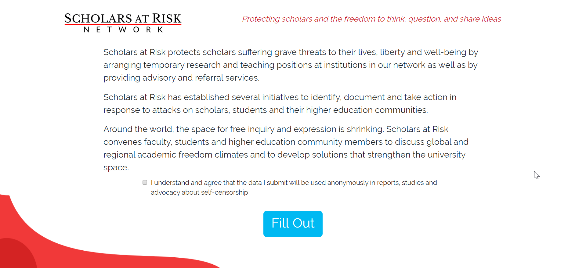
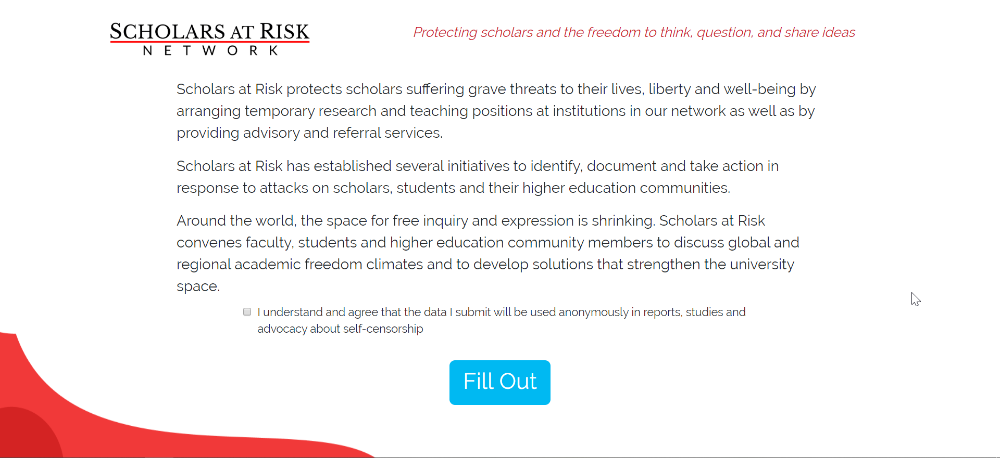
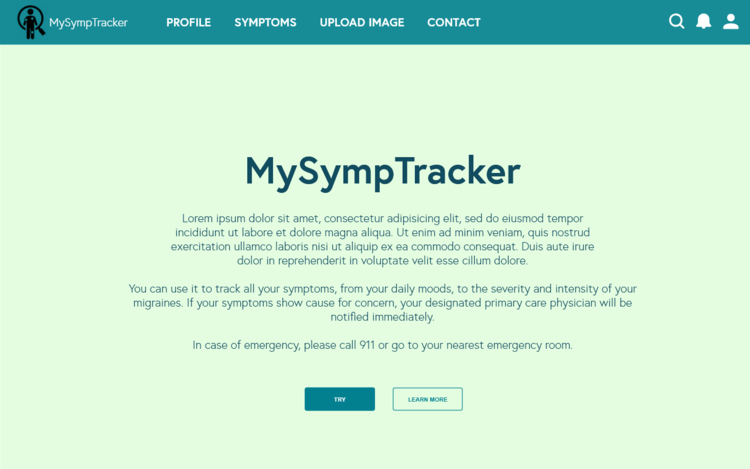
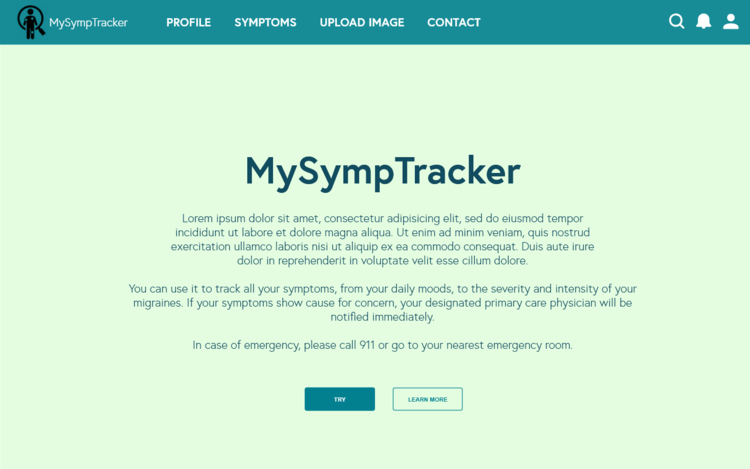

Hi!
Hi! I'm
I'm
Isabel. a CS/bio student. a software developer. a data scientist.
CUNY Hunter College | HAX | Fiera Capital Inc.
about.
As a computer science and biology student, I hope to gain skills and hands-on experience in both medicine and technology. I would also like to gain experience and exposure to different fields and industries along the way. Ultimately, I plan on working at the intersection of biomedicine and data science to improve patient outcomes with extensive and well-communicated information.
Outside of programming and academics, I take care of my furball Terry. I also enjoy watching dramatic TV shows, playing video games, eating too much fastfood and walking the streets of New York City.
featured news.
- I was named one of Major League Hacking's Top 50 Hackers in 2020. Out of 100,000 students who participated in hackathons, my story was one of 50 that was recognized on this list due to my projects and impact on other students in the community.
- The co-founders of Shine, Naomi Hirabayashi and Marah Lidey, sit with Isabel, computer science student, to talk about shifting workspace culture to celebrate an employee's whole self and life outside of work.
- NJII Code-a-thon focuses on Maternal Mortality and Morbidity.
- Consortium Alumni Youth Council member Isabel Abonitalla talks about her experience in the Urban Barcode Research Project and the Hypothekids HK Maker Lab Program.
- How cool is science? Students use barcoded DNA to identify a weapon against antibiotic resistance.
- HK Maker Lab is our 6 week intensive biomedical engineering design program for 24 New York City high school students.
experience


Choose an company logo on the left to learn more.
WEB DEVELOPMENT INTERN | CARIBOU HEALTH
May 2020 - Present
▪ Develop components for web-based healthcare platform
OPERATIONS & IT INTERN | FIERA CAPITAL INC.
January 2020 - May 2020
▪ Developed an API that pulls data from the FBI's crime reports to calculate Environmental, Social and Corporate Governance criteria used for investments.
▪ Leveraged Office 365 applications (PowerApps, Flows, SharePoint) to optimize account event tracking, thereby minimizing redundant data entry and other manual tasks done by the Accounts Services team
Fiera Capital Corporation is a global independent asset management firm with over $124 billion in AUM as of September 30, 2019, more than $25 billion of which is managed or advised by the U.S. division. We deliver customized multi-asset solutions across traditional and alternative asset classes to institutional, retail and private wealth clients across North America, Europe and key markets in Asia. We strive to be at the forefront of investment-management science and we are passionate about creating sustainable wealth for clients.
DIRECTOR OF INTERNAL AFFAIRS & OPERATIONS | HAX
March 2019 - Present
▪ Promoted to director within 5 months of managing the design team in the creation of graphics & social media posts and the maintenance of branding standards
▪ Streamline onboard of volunteers & mentees to lower attrition rate
▪ Manage nonprofit compliance, financial reports, logistics, quarterly goals, and maintenance of guidelines & standards
As a nonprofit, HAX aims to globalize computer science education for all by hosting hackathons as a way to provide equal opportunities for women and disadvantaged minorities. We are guided by our three core values: inclusiveness, accessibility, and education. We emphasize these values through our hackathons that are catered towards educating and empowering women and minorities to pursue computer science and using it for social good.
DATA ANALYTICS INTERN | CITY UNIVERSITY OF NEW YORK: REGISTRAR
July 2019 - August 2019
▪ Collaborating with a team of 6 to collect, organized and analyzed educational and institutional records for student enrollments
▪ Researched and standardized the records of over 250 comprehensive courses offered by the CUNY system
▪ Validated over 1400 records of institutions from CUNY applications
▪ Tested and debugged Schedule Builder, a student-facing software application that allows them to optimize their class schedules
The Office of the University Registrar serves to ensure academic integrity by communicating institutional policies and is a resource for all members of the college community. OUR fosters an environment that supports students, alumni, faculty, administrators, staff and the community in order to promote the educational mission of the University. The Office of the University Registrar monitor university practices and procedures and recommend changes to ensure the most accurate, efficient and prompt service.
QUALITY MANAGER | HIGH SCHOOL ACHIEVEMENT PROGRAM AT KHAN’S TUTORIAL
March 2017 - March 2019
▪ Promoted to manager within 7 months of instructing over 70 students
▪ Yielded a 20% increase in sales and enrollments; enabled over 239 students get 88th percentile on SAT and over 252 students get over a 90 on state exams
▪ Spearheaded the creation of a more efficient student database for the SAT program
▪ Supervise and collaborate with 5 instructors who teach over 210 enrolled students for state exams and the SAT
▪ Manage classroom logistics; office and technical inventory; and company finances
Khan’s Tutorial is a tutoring academy founded in 1994 with 11 locations and over 300 highly-trained instructors. The High School Achievement Program prepares students to excel in high school and gain acceptance to the top colleges of their choice with financial aid and scholarships by providing subject tutoring, standardized test-prep, and mentorship through weekend sessions, small group classes, and daily classwork and homework from a specialized and challenging curriculum.
NURSING INFORMATICS INTERN | ROBERT WOOD JOHNSON UNIVERSITY HOSPITAL
January 2019
▪ Educated nursing directors on using HealthGrid for electronic medical records and optimizing patient experience
▪ Debugged and troubleshooted Find Your Way, the in-house navigation app
The Nursing Informatics Department is an interdisciplinary team who research, educate, implement, and maintain technology to promote and ensure high quality patient care and patient safety while motivating and leading the nursing team.
RESEARCH ASSOCIATE | COLUMBIA UNIVERSITY IRVING MEDICAL CENTER
June 2017 - August 2018
▪ Applied machine learning algorithms to classify multiple sclerosis variants based on proton spectroscopy data from the human brain
▪ Developed algorithm using R Studio with over 72% accuracy in classifying multiple sclerosis variants in patients
The MR-Science Laboratory pursues MR engineering in the fields of magnetic resonance imaging (MRI), spectroscopy (MRS) and spectroscopic imaging (MRSI) to advance their clinical potential for the study of neurodegenerative diseases. To this end, MR method developments are combined with state-of-the-art MRI, MRS and MRSI techniques to derive in vivo direct knowledge of the pathobiochemistry underlying clinical conditions such as multiple sclerosis, diabetes or post-traumatic stress disorder (PTSD).
RESEARCH INTERN | ICAHN SCHOOL OF MEDICINE AT MOUNT SINAI
April 2016 - May 2017
▪ Identified novel phage by characterizing soil biomes using next-generation sequencing
▪ Participated in preparatory classes in Conservation Biology & DNA Barcoding
The tenOever lab [pronouced ‘ten-oo-ver’, like maneuver with a ‘T’.] is interested in the way cells have evolved to defend themselves against virus infection. More specifically, the lab focuses on what constitutes different cellular defense systems, how these systems have been shaped over time, and how viruses circumvent them and cause disease.
STUDENT INTERN | FU FOUNDATION SCHOOL OF ENGINEERING AND APPLIED SCIENCE
July 2016 - August 2016
▪ Prototyped & tested a guidance system for the visually impaired using ultrasonic sensors placed on glasses accompanied by speakers
▪ Devised a business plan & presentation for a panel of biomedical professionals
The Hk Maker Lab is an intensive six-week summer program to learn the foundations of design. Focusing on addressing a health problem, participants will design, prototype and test a biomedical device and develop an associated business plan. The program will culminate in a presentation to leading executives from the biomedical community. The Hk Maker Lab projects might then be incubated using the state-of-the-art facilities at Harlem Biospace.
projects

 


 
